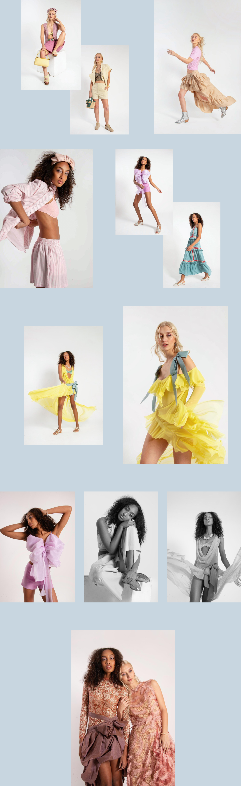

Producción de fotos para revista Elle Argentina, edición Septiembre 2025, Anticipo de Colección.
Fotos: Marga Salleras - Estilismo: Consuelo Sanchez - Modelos: Jose Masajnik y Alejandra Diaz - Makeup: Barmaj Studio - Asistente de fotografía: Taty Alfano
En mi rol como asistente de estilismo, participé en el armado de looks junto a la estilista, vistiendo a la modelo y asistí en set durante la toma, asegurando la correcta caída y lectura de las prendas en cámara. Asimismo, me encargué de la preparación, búsqueda y devolución del vestuario.
